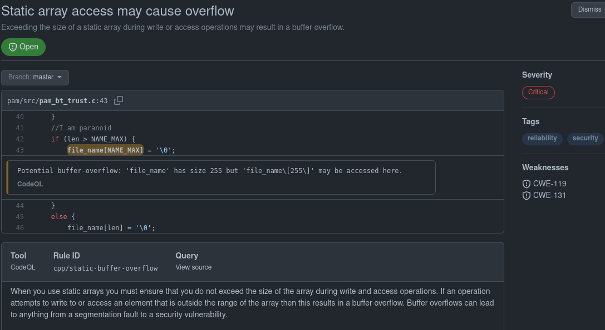

Being bored and not wanting to study, I randomly checked up my Github repo and realized the static analyzer flagged a critical vulnerability in my code. For those of you not familiar with static analyzer, it is a security tool that reviews/analyzes code to determine if there are any obvious security vulnerabilities in your code. On Github, there is a pipeline workflow feature that allows you to execute specific scripts/actions for any code changes you push called Github Actions. Github has made it convenient to setup security analysis on your repo. The static analyzer I am using is called CodeQL, a tool created by Github. Here’s an example of the report that was flagged:

On December 29, 2021, CodeQL detected a critical vulnerability after I pushed a security patch to prevent link attacks. While the code in question was introduced more than 2 years ago, I did not realize the bug till today. Here’s an example of asan complaining about writing past the buffer if we set the username to be some very long string:
$ ./pam_test start bluetooth_login checking file: /etc/proxy_auth/ checking file: /etc/proxy_auth/zakuAAAAAAAAAAAAAAAAAAAAAAAAAAAAAAAAAAAAAAAAAAAAAAAAAAAAAAAAAAAAAAAAAAAAAAAAAAAAAAAAAAAAAAAAAAAAAAAAAAAAAAAAAAAAAAAAAAAAAAAAAAAAAAAAAAAAAAAAAAAAAAAAAAAAAAAAAAAAAAAAAAAAAAAAAAAAAAAAAAAAAAAAAAAAAAAAAAAAAAAAAAAAAAAAAAAAAAAAAAAAAAAAAAAAAAAAAAA /etc/proxy_auth/zakuAAAAAAAAAAAAAAAAAAAAAAAAAAAAAAAAAAAAAAAAAAAAAAAAAAAAAAAAAAAAAAAAAAAAAAAAAAAAAAAAAAAAAAAAAAAAAAAAAAAAAAAAAAAAAAAAAAAAAAAAAAAAAAAAAAAAAAAAAAAAAAAAAAAAAAAAAAAAAAAAAAAAAAAAAAAAAAAAAAAAAAAAAAAAAAAAAAAAAAAAAAAAAAAAAAAAAAAAAAAAAAAAAAAAAAAAAAA does not exist AddressSanitizer:DEADLYSIGNAL ================================================================= ==690622==ERROR: AddressSanitizer: SEGV on unknown address (pc 0x0000004020af bp 0x4141414141414141 sp 0x7fff57ecf798 T0) ==690622==The signal is caused by a READ memory access. ==690622==Hint: this fault was caused by a dereference of a high value address (see register values below). Dissassemble the provided pc to learn which register was used. AddressSanitizer:DEADLYSIGNAL AddressSanitizer: nested bug in the same thread, aborting.
The static analyzer was complaining that I was writing past the static array:
if (len > NAME_MAX) {
file_name[NAME_MAX] = '\0';
At the time I wrote this code, I completely forgot that array indexes start from 0. So I made the newbie mistake of writing the null character one byte after the array. The reason why this never caused an issue during testing was that we never had a situation where the size of the filename (i.e. the path + length of the file) exceeded 255 characters. The project currently has no automated fuzzing and no automated test to try to break the program.
Upon inspecting the code, I realize there were more issues than what CodeQL detected.
I never checked whether the string I am concatenating does not exceed the buffer size.
I did use strncat instead of a strcat. However, I was effectively using strncat as strcat.
Here’s an example of what I wrote:
if (strlen(trusted_dir_path) > 0) {
strncat(file_name, trusted_dir_path, strlen(trusted_dir_path));
len += strlen(trusted_dir_path);
I should be copying the smallest length between the string and the remaining space in the buffer.
So I simply changed the code to copy the smallest value between PATH_MAX -1 (the length of the maximum path length discluding the null character)
and the length of the directory passed into the function. I also added an assert statement just for assurances.
I made a few other changes as you may have noticed (i.e. the size of file_name dramatically increased to accurately depict the maximum length of the system
indicated in the file limits.h).
if (strlen(trusted_dir_path) > 0) {
copy_len = strlen(trusted_dir_path);
copy_len = copy_len > (PATH_MAX -1) ? (PATH_MAX - 1): copy_len; //PATH_MAX includes null-terminator
strncat(file_name, trusted_dir_path, copy_len);
}
assert(strlen(file_name) < buf_size);
The funny part of this security bug is that I opened an issue stating there are areas in the code where I need to do bound checks weeks ago but it completely slipped my mind. I created the issue on the fly while listening to a youtube video about bound checking in the Linux Kernel. I guess there are quite a bit of patches I will need to make in the coming months to harden the security of the project.
Anyhow, that concludes my quick post on buffer overflow. It would be nice to see what I could do with this security bug in my code but I am a bit lazy right now (as you can probably tell since I am writing this blog post instead of reviewing my course materials).
Note: I do understand I should not be posting about a vulnerability before the patch gets released to the public. The project is not actively being used by anyone and this is a hobby project I work on whenever I get the time.